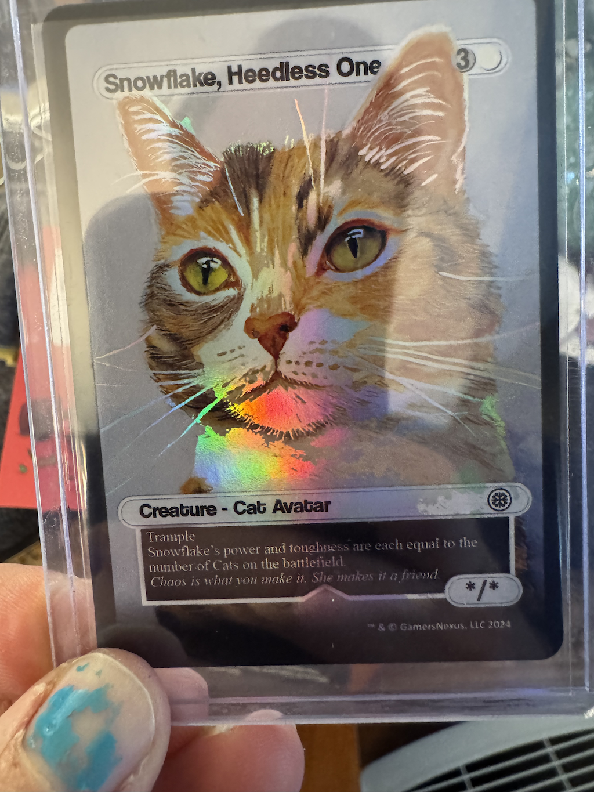

Geez but I have a backlog of posts to write. Yeah, I’m back. Been a bit! I’m sorry for the radio silence over here these past nearly-six months; it’s been anything but dull, that’s for sure. While there is plenty of catching-up to do, for now that’ll have to wait: instead, I want to discuss this year’s December Adventure!
For those who don’t know, December Adventure is something cooked up as a more DIY alternative to Advent of Code. The spirit is the same—basically, work a little bit each day of December—except instead of following a coding and problem solving script, the goal is entirely up to you. I took a stab at this last year and was marginally successful, so I figured I’d take another stab at it this year.
Clearly, I’m off to a mediocre start, given that it’s December 4 and I’m only just posting about it now. But I’m hoping by kicking this snowball down the hill, it gives me some momentum. Or maybe I’m just off in fantasy land.
Fortunately, I have a project in mind: creating a LAN-wide reverse proxy for my homelab!
Motivation
In the past couple years, I’ve really taken to the DIY homelab mentality. In addition to setting up and running my own Mastodon instance for the past two years, I also set up an Unraid box after converting my old home desktop I built in 2015 (which was still perfectly functional!) to a decently powerful server. With endless news cycles about the death of privacy online, I wanted some corner of the internet to be fully under my own control.
However, between the external-facing Mastodon and a growing number of internal services (JellyFin, wildlife cameras, photo albums, and an eventual NextCloud instance), it’d be really nice—if not outright essential, in the case of NextCloud—to not have to remember IP addresses and ports, and instead just type something like https://jellyfin.local.our-home.domain.
I already have a Traefik reverse proxy running on my 6-node Raspberry Pi k3s cluster, but all it does at the moment is serve up requests for the Mastodon instance (which it is also running). My goal this December Adventure is to reconfigure this reverse proxy to serve all my internal services.
I even created a thread about this over at the Traefik forums, but it has yet to receive any kind of response. So if you know anything about reverse proxies, feel free to drop a line there!
I’d also started collaborating with a fellow Mastodon user in the Discord over the summer, but he’s since dropped off and I haven’t been able to follow up. I posted a few issues on his config so we could compare notes, but I’ve yet to hear anything from him, so it seems like I’m on my own.
Everything I’ve heard and seen so far seems to fall into one of two camps: 1. Here’s how to create a reverse proxy on Docker Compose! 2. Here’s how to create a reverse proxy for services that all run on your kubernetes cluster!
What I’m trying to do differs in that I want the reverse proxy to run on my kubernetes (k3s) cluster, but to have it connect to services that may or may not run on the same cluster, and may in fact be running on physically separate machines (the traefik community post has these details).
This would not only make my life easier as the number of internal LAN services grows, but would allow me to get NextCloud up and running (as it requires its own DNS entry).
Sub-goals
In addition to the main objective of reconfiguring my Traefik instance as a reverse proxy for multiple internal services, there are a few other things I’d like to do.
- Set up a wildcard DNS certificate for internal services. This will let me add SSL to everything! I already have Cloudflare as my DNS and certificate provider, so this shouldn’t be too much of a hassle.
- Install internal NextCloud. I’ll probably run this on my Unraid server since NextCloud seems to be a pretty beefy application (i.e., beyond what little Raspberry Pis might be able to handle). I don’t want it to be externally accessible, but it still needs a domain name, hence the dependency on the reverse proxy.
- Move kubernetes cluster configuration to a repo. This is a bit of a meta-goal, as it involves some additional subtasks. But the gist is that my kubernetes configuration is currently a glorified shell script, and that absolutely needs to change. I’ve toyed in the past with putting everything into Ansible, but I think to start I just need to separate out the helm charts for each application and put them under version control so they can be more easily updated and maintained. I already have an internal forgejo repository running so I could even just use that, though once again the reverse proxy will dramatically simplify its use.
Other
Oh, and I’d also really like to try and build a Magic: The Gathering deck around this card.

If you’re interested in computer hardware you should absolutely follow GamersNexus on YouTube. But they’re also just good, decent people. They’re based in North Carolina and recently did a big fundraiser following Hurricane Helene for three of the local charities (including an animal rescue). One of their newest products is a box of gaming dice, and this particular model came with a custom-made Magic (-like) card (because Steve loves D&D and Magic) of his cat Snowflake (the art was done by his mom! so cool!), and now I’m obsessed with building a Cat deck around this card.
I found this promising white-green Cat deck that I might use to start out, but if anyone knows of any other TappedOut / MtgGoldfish builds along these lines, please send them my way!
Happy December Adventuring!
Citation
@online{quinn2024,
author = {Quinn, Shannon},
title = {December {Adventure,} 2024 Edition},
date = {2024-12-04},
url = {https://magsol.github.io/2024-12-04-december-adventure-2024-edition},
langid = {en}
}